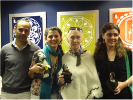
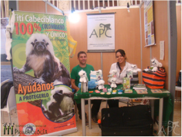
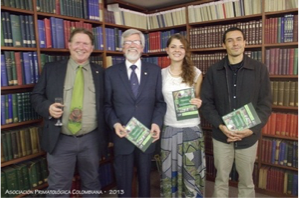
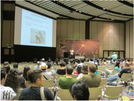
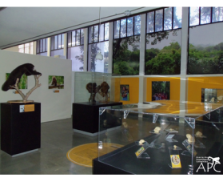
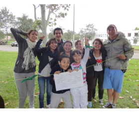
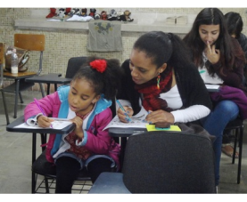
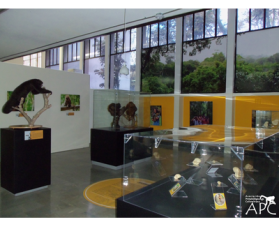
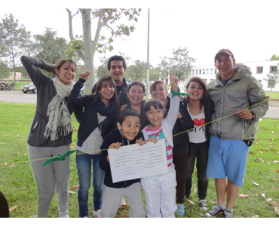
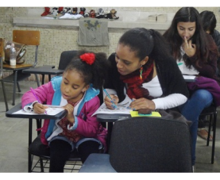

Nuestra historia,
una hermosa historia que contar…




La Asociación Primatológica Colombiana fue constituida el 14 de diciembre de 2009, con miras a mejorar la
representación del campo de la primatología en Colombia y a nivel internacional, y buscando ser el eje
central de las actividades relacionadas con los primates Colombianos.
En 10 años de gestión, la APC se ha convertido en una organización líder en el campo de la primatología a
nivel nacional y regional, integrando las diversas ONG y grupos enfocados en el estudio y conservación de
los primates en Colombia, y ayudando al crecimiento y fortalecimiento de la primatología en Latinoamérica.
Así mismo, desde sus inicios la APC ha establecido alianzas y ha trabajado de la mano con numerosas
entidades nacionales e internacionales, buscando aunar esfuerzos en torno a metas comunes en beneficio del
estudio y la conservación de los primates en Colombia.
 




